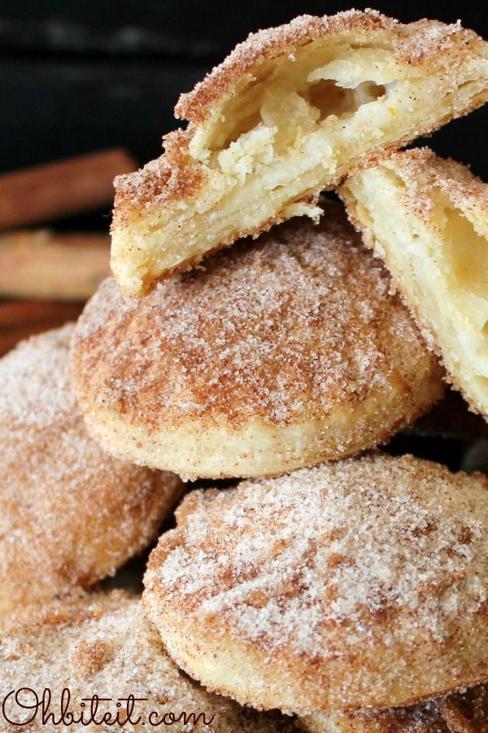

Churro Cookies

Perhaps Churro inspired, but yummy all the same
Ingredients
- 2 Pillsbury Pie Crusts
- 12 Soft Caramel Candy, Cut into half
-
- 1/4 cup of butter, UNSALTED, Melted
- 1 Cup granulated sugar
- 1 tbsp Cinnamon powder
Steps
- Roll out the pie crusts and use a small round cutter to cut out 12 pieces on each crust. You can reuse the crust and roll it out again to make more circular pieces.
- Place a small piece of caramel candy in the center of one piece.
- Brush the edges with water
- Place another pie piece of top of the caramel and press the edges with a fork to seal everything together.
- Place cookies on a tray, lined with parchment paper.
- Bake at 400 degrees for about 8-10 minutes OR until golden brown along the edges.
- Allow the cookies to cool down.
- Meanwhile, prepare the sugar mixture by mixing together the granulated sugar and cinnamon in a small mixing bowl.
- When the cookies cool down completely, brush melted butter on both sides.
- Roll them in a bowl of cinnamon sugar. Enjoy!